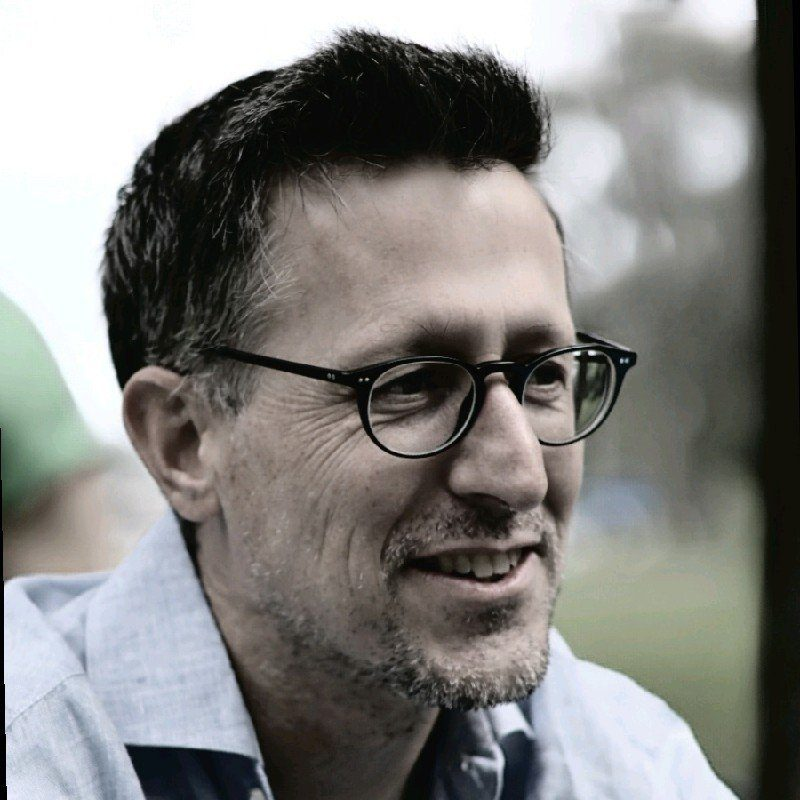
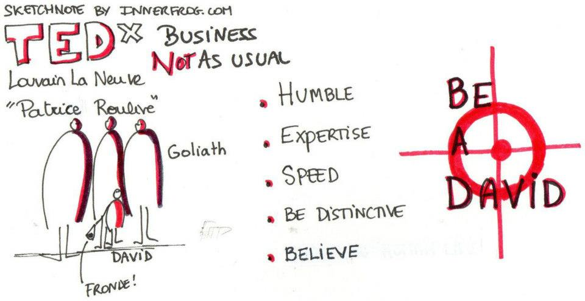

Entrepreneur, investor and mentor in healthtech
I co-founded a European medical imaging company. Today I invest in health startups and support their founders.
Extending human life through medical imaging. Telemis brings every clinical image onto a single platform, for hospitals and imaging centres across Europe and the Middle East.
Offices in Belgium, France, Luxembourg, Italy, Switzerland and Germany.
A UCLouvain spin-off in Louvain-la-Neuve. I start out leading R&D.
Then expert at NEST'up, from 2012 to 2016.
From November 2011 to February 2014: co-founders, values and hiring, then sales.
The “David vs Goliath” talk.
And Telemis turns 15.
Evaluating SME Instrument projects.
Until 2025.
In Louvain-la-Neuve.
Belgium's leading angel investment network.
A European venture fund backing seed to Series A companies in digital, deeptech and cleantech.
Andera Partners' growth equity fund for mid-sized companies in France and neighbouring countries.
A Paris dermatology centre that pairs specialist exams with high-resolution skin imaging.
Financial and strategic support for startups, mostly in health, directly or through funds.
Hands-on experience, far from polished success stories. Founder Institute, NEST'up, Microsoft Innovation Center, and now strategic advisor at The POD.
At TEDx Louvain-la-Neuve in 2013, I talked about how a small company can equip itself to win against the giants. Five ideas, captured in the evening's sketchnote:

Sixteen years of blogging, from 2007 to 2023: 826 posts, mostly in French.